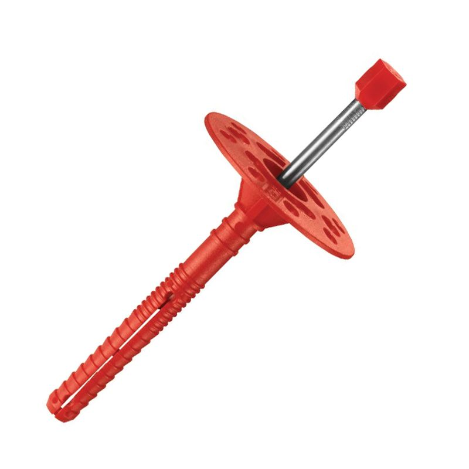
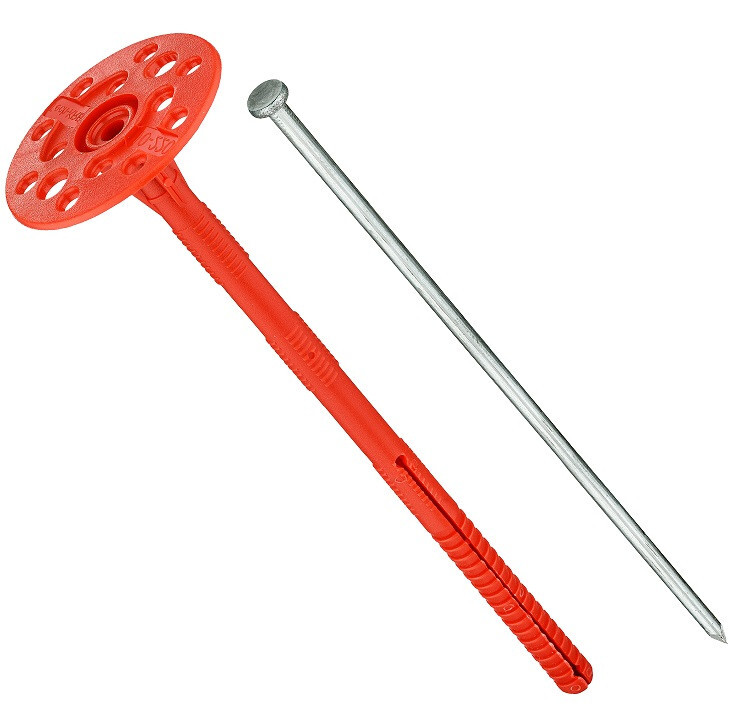

Тарельчатые дюбелиДюбель для теплоизоляции с металличеcким гвоздем с увеличенной термоголовкой IZL-T 8L, Tech-krepTech-KrepЦена по запросу Есть варианты
Тарельчатые дюбелиДюбель для теплоизоляции с металличеcким гвоздем с термоголовкой IZL-T, Tech-krepTech-KrepЦена по запросу Есть варианты
Тарельчатые дюбелиДюбель для теплоизоляции с металлическим гвоздем IZM, Tech-krepTech-KrepЦена по запросу Есть варианты
Тарельчатые дюбелиДюбель для теплоизоляции с металлическим гвоздем IZM EcoPlast, Tech-krepTech-KrepЦена по запросу Есть варианты
Тарельчатые дюбелиДюбель для теплоизоляции с металлическим гвоздем и герметичной крышкой IZM-T, Tech-krepTech-KrepЦена по запросу Есть варианты
Тарельчатые дюбелиДюбель для теплоизоляции с металличеcким гвоздем с увеличенной термоголовкой IZL-T 10L, Tech-krepTech-KrepЦена по запросу Есть варианты